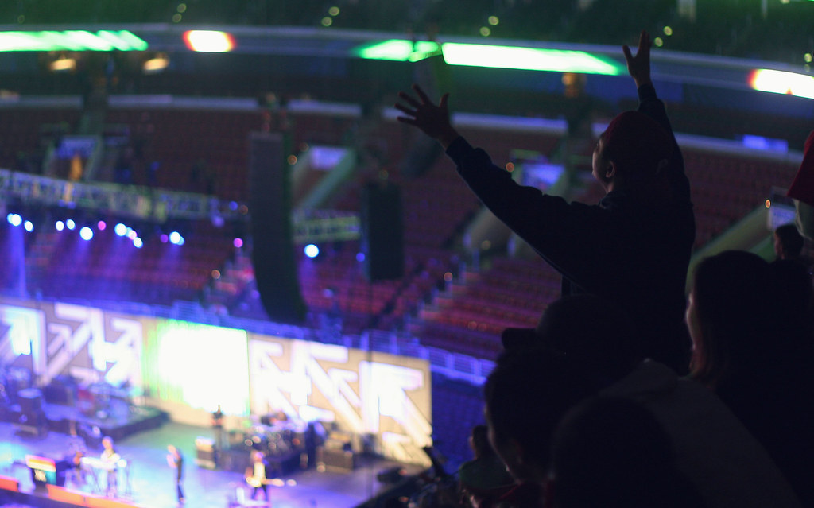

Tanging Kailangan (Acoustic)
Victory Worship · G · 72 BPM · Verse 2
1:42 / 4:58
Em
nextC
The lyric line shows here · with the next words
Camera

EMEET C60E1080p · 60 fps
Recording with the takeOn
Take
Guitar + Vocal + cameraTake 34:41 · 0 dropouts
Take 22:05 · 0 dropouts
Take 13:58 · 1 dropout
Saved to this song with a separate guitar and vocal file. The raw recording is kept.
Guitar
E2 Gen2In your headphones 26 ms
Vocal
PD200XIn your headphones 26 ms
Pad
Shimmer · GFollows the key G